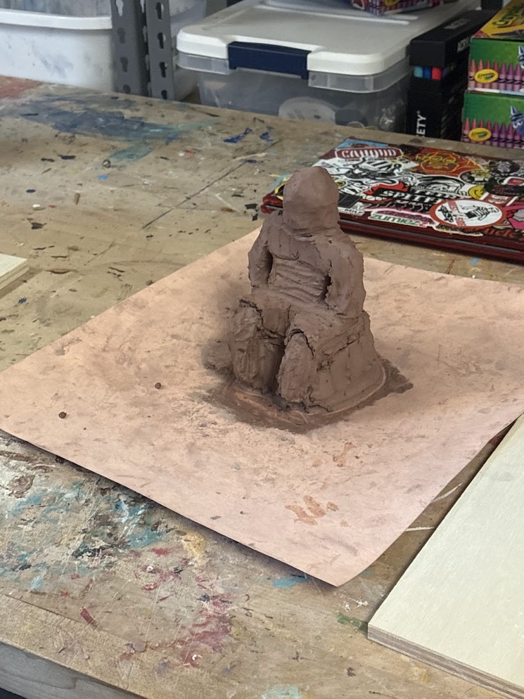
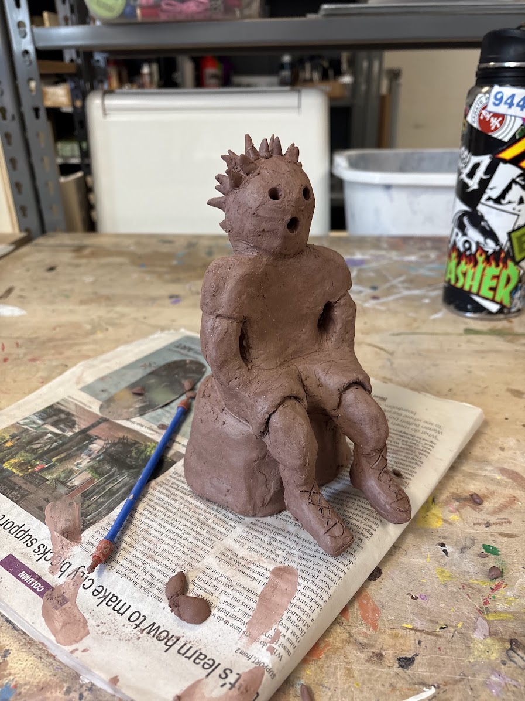
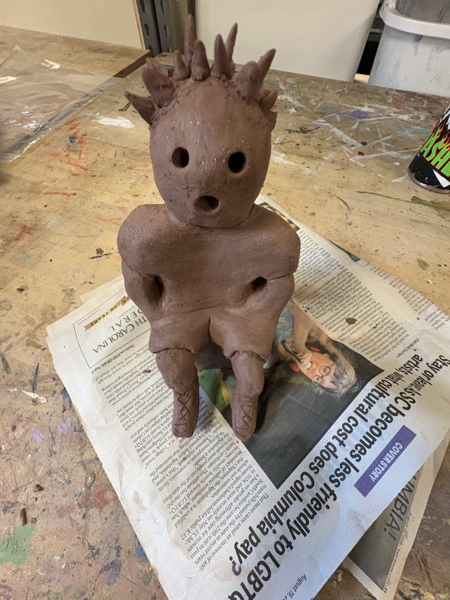
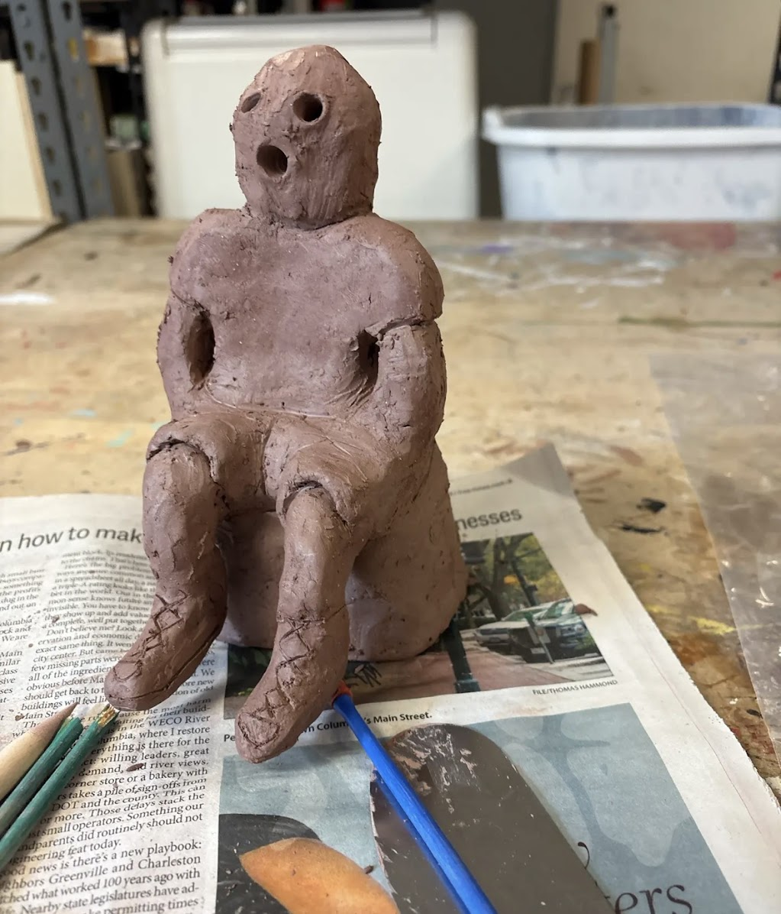

About the Project
Relics and Relief is a contemporary sculpture inspired by Japanese haniwa figures. Traditional haniwa were clay objects made during Japan’s Kofun period, from approximately the third through sixth centuries CE. They were placed on and around large burial mounds, called kofun, and were connected to rituals honoring and protecting the dead. My sculpture combines the historical qualities of haniwa with personal details from modern life. The figure sits on a cylindrical base, referencing the earliest haniwa forms. Its body uses simplified proportions, minimal facial details, and a stylized shape to reflect the non-realistic appearance of ancient haniwa sculptures. At the same time, the figure includes modern clothing, shoes, red spiky hair, and a skateboard. The red hair represents a hairstyle I have wanted to try but have not yet had the opportunity to have. The skateboard represents my identity and everyday life. It also connects to the objects, weapons, and tools held by some historical haniwa figures. By replacing an ancient object with a skateboard, I wanted to show how a traditional artwork can be reimagined in a personal and modern way. This sculpture represents both who I am now and the person I hope to become. It connects the past with the present by showing that art from thousands of years ago can still inspire new forms of self-expression.
What are Haniwas?
Haniwa are terracotta clay figures and cylinders made for use around Japanese burial mounds during the Kofun period. The word haniwa can describe both plain clay cylinders and sculptural figures placed on top of them. Early haniwa were mostly cylindrical, but later artists created figures shaped like people, animals, houses, armor, and other objects. These sculptures were made from coiled clay using a technique called wazumi. Artists built the forms upward by stacking and shaping coils of clay. The finished objects were then fired, giving them their recognizable reddish-orange terracotta color. Although scholars do not know the exact purpose of every haniwa, they were likely important to funerary ceremonies and beliefs. They may have marked sacred spaces, protected the dead, represented people at a burial ceremony, or displayed the power and status of the person buried in the tomb.



